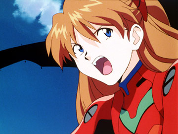

| Neon Genesis Evangelion | |
|---|---|
| 新世紀エヴァンゲリオン Shin Seiki Evangerion |
|
|
|
|
| Informações gerais | |
| Gêneros | |
| Anime | |
| Produção | |
| Direção | Hideaki Anno |
| Música | Shirō Sagisu |
| Estúdio de animação | |
| Distribuição/ Licenciamento |
Netflix |
| Emissoras de televisão originais | TV Tokyo |
| Emissoras de televisão lusófonas |
|
| Período de exibição | 4 de outubro de 1995 – 27 de março de 1996 |
| Episódios | 26 (lista de episódios) |
Enredo
O enredo de Evangelion se passa em 2015, em um mundo que acabara de ser reconstruído após a dizimação de metade da humanidade na catástrofe que ficou conhecida como “Segundo Impacto”.
O Japão ganha uma capital provisória, a Tokyo-2, cujo Governo promove a construção da futura capital denominada Tokyo-3. Mas a construção da nova metrópole serve apenas de fachada para erguer uma cidade-fortaleza com tecnologia altamente avançada para resistir à ofensiva dos Anjos, monstruosos seres, cujo ataque já havia sido previsto pela humanidade.
A organização especial paramilitar, denominada NERV, foi incumbida da missão de combater tais ameaças usando mechas gigantes chamados de Evas, que são pilotados por jovens rigorosamente selecionados.
Um deles é Shinji Ikari, um tímido adolescente. Na realidade, há mais de dez anos ele foi abandonado pelo pai, Gendo Ikari, atual comandante supremo da NERV.Aos 14 anos, Shinji é chamado por ele para pilotar o incrível EVA-01, a última esperança da humanidade na batalha contra os Anjos. Assim dá-se início a uma aventura inigualável em que ficção científica se mistura aos sentimentos mais complexos e profundos do ser humano.
Personagens
Os personagens de Evangelion estão continuamente lutando com seus relacionamentos interpessoais, seus "demônios" internos, e traumas do passado, criando um complexo relacionamento familiar.
Hideki Anno (criador da série) descreve o personagem principal, Shinji Ikari, como um garoto solitário e convencido de que as pessoas não precisam dele, mas que, no entanto, também não tem coragem de cometer suicídio.Ele descreve Shinji e Misato Katsuragi como extremamente "fracos, fraquinhos e fracotes" e "indecisos" em suas atitudes, que são pouco positivas para classificar alguém como herói de uma história.
Ainda sim, dentro dos estereótipos heróicos, Shinji é caracterizado como o que tem mais força e emoção, mesmo não possuindo muita sorte de heroísmo ou bravura. Rei Ayanami e Asuka Langley Soryu, as outras protagonistas da série, também possuem falhas similares e dificuldades de relacionar com outras pessoas.Os personagens de Yoshiyuki Sadamoto têm contribuído para a popularidade do Evangelion.
Personagens Principais
 |
Shinji Ikari (碇 シンジ) 14 Anos É o protagonista do anime Neon Genesis Evangelion, e, subsequentemente, dos demais conteúdos relacionados a franquia. É o piloto do Evangelion Unidade 01 e definido como Terceira Criança pela NERV. A história principal é centrada em sua jornada, sua personalidade e suas relações com os demais personagens. Hideaki Anno, o criador da obra, considera Shinji como uma projeção de si mesmo. |
|  |
Asuka Langley Soryu (惣流・アスカ・ラングレー, Soryu Asuka Rangure) 14 Anos É designada como a Segunda Criança do Projeto E é a piloto da Unidade Evangelion 02. Asuka é descendente mestiça de alemães e japoneses, mas sua nacionalidade é alemã. Asuka é descendente mestiça de alemães e japoneses, mas sua nacionalidade é alemã. Asuka é impetuosa, egoísta, e muitas vezes verbalmente abusiva com os outros |
|
Rei Ayanami (綾波 レイ) 14 Anos É uma das principais personagens femininas do anime Neon Genesis Evangelion e, subsequentemente, dos demais conteúdos relacionados a franquia. É designada como a Primeira Criança e é pilota da Unidade Evangelion 00. Seu passado enigmático e sua personalidade distante são importantes pontos da história, e desempenha um papel importante na conclusão desta. |
|

|
Misato Katsuragi (葛 城 ミ サ ト) Idade 43 Anos É um capitã, e mais tarde uma Major, na Nerv. Ela está no comando de Operações Táticas da NERV, responsável pela coordenação dos Evangelions em combate real (ao contrário da Divisão de Ciência, chefiada pela amiga de longa data Dra. Ritsuko Akagi). Ela é filha do Dr. Katsuragi, e a única sobrevivente de sua expedição, dizimado como resultado de Segundo Impacto. Aldulta, Misato é transferida para Tokyo-3 pouco antes dos Anjos reaparecerem. Pen. |
|
Gendo Ikari (碇ゲンドウ, "Ikari Gendō") Idade 30 Anos É o pai de Shinji Ikari e o Comandante da NERV. Ele desempenhou um papel importante na pesquisa e construção do Evangelions e do Projeto de Instrumental Humano. Gendo abandonou seu filho, Shinji, quando ele era criança e ao longo da série ele não estava interessado, distante e áspero em relação a Shinji. |
Mangá
Existem quatro séries em mangá, todas publicadas pela Kadokawa Shoten:
Neon Genesis Evangelion Título Original: 新世紀エヴァンゲリオン (Shin Seiki Evangerion)
Autoria: Yoshiyuki Sadamoto Lançamento: 02/1994
Volumes: 14 Publicado no Brasil em dois formatos, o meio-tanko pela editora Conrad (Volumes 01 ao 20) e retomado pela JBC (Volumes 21 ao 28) e no formato tankobon inteiro pela editora JBC (Existe uma versão do primeiro volume tankobon pela Conrad)
Neon Genesis Evangelion: Angelic Days
Título Original: 新世紀エヴァンゲリオン 鋼鉄のガールフレンド 2nd (Shin Seiki Evangerion Kōtetsu no Gārufurendo 2nd) Título Alternativo:Neon Genesis Evangelion: Angelic Days Autoria: Hayashi Fumino Lançamento: 11/2003
Volumes: 06 (concluída em 2005) Publicado no Brasil pela editora Conrad em 12 edições meio-tanko.
Petit Eva :Evangelion@School Neon Genesis Evangelion: Campus Apocalypse Título Original: 新世紀エヴァンゲリオン 学園堕天録 (Neon Genesis Evangerion: Gakuen Datenroku) Autoria:
Min Min Lançamento: 10/2007 Volumes: 04 (concluída em 2009)
Anime
Do período de 1984 até o lançamento de Evangelion, o tão esperado anime tem um estilo meio distanciado para um estilo popular de anime. Por exemplo, os longas de Hayao Miyazaki Meu Amigo Totoro (1988), e O Serviço de Entregas da Kiki (1989) foram ambos obras de baixo rendimento, enquanto Akira (1988) foi influenciado por revistas de desenho americanas. O diretor Mamoru Oshii tem dito que, em outras palavras de Hiroki Azuma, ninguém procura assistir um anime que todo mundo gosta. Evangelion, entretanto, mostra o reverso disto. É totalmente em volta do estilo mecha de anime, e em particular mostra uma larga influência de Space Runaway Ideon de Yoshiyuki Tomino; particularmente, as cenas de The End of Evangelion são claras homenagens para o último filme da série de Ideon.
Em 2003, o anime ganhou uma remasterização chamada "Renewal of Evangelion". Essa remasterização trazia algumas melhorias na animação, cenas novas (director's cut) e melhorias na trilha sonora.
No Brasil, Evangelion foi transmitido pela primeira vez em 1º de Novembro de 1999, no canal Locomotion, e, posteriormente, exibido em 2011 pela NGT (nesta última, de forma não-oficial), com áudio dublado pelo estúdio Mastersound. Em 2007, a série clássica de Evangelion teve uma redublagem lançada pelo estúdio Álamo, com o áudio melhorado, que foi exibida pelo Animax, com exceção da NGT, canal UHF de fraca distribuição, todos os canais que exibiram Evangelion são de TV por assinatura (Locomotion e Animax), diferentemente do que aconteceu em outros países da América do Sul, que exibiram o anime em TV Aberta (como o canal Chilevisión, do Chile). Em 2019, o anime entrou no catálogo da Netflix com a dublagem feita pelo estúdio Vox Mundi. Em 2020 o anime foi exibido no canal Loading.
Lista de Episódios
| No. na Série |
Título Original/Título Oficial em Inglês (ADV Films) | Título em Português Brasileiro |
|---|---|---|
| 01 |
Angel Attack |
O Ataque dos Anjos |
| 02 | The Beast "見知らぬ、天井" 
|
Teto Não Familiar |
| 03 | A Transfer 鳴らない、電話" |
O Telefone Que Jamais Toca |
| 04 | Hedgehog's Dilemma "雨、逃げ出した後" |
O Dilema do Ouriço |
| 05 | Rei I "レイ、心のむこうに" |
Rei, Além de Seu Coração |
| 06 | Rei II "決戦、第3新東京市" |
Confronto em Tokyo-3 |
| 07 | A Human Work "人の造りしもの" 
|
A Criação Humana |
| 08 | Asuka Strikes! "アスカ、来日" |
Asuka Ataca |
| 09 | Both of You, Dance Like You Want to Win! "瞬間、心、重ねて" |
Dancem Como Se Quisessem Vencer! |
| 10 | Magma Diver "マグマダイバー" |
Inferno de Magma |
| 11 | The Day Tokyo-3 Stood Still "静止した闇の中で" |
Na Escuridão Silenciosa |
| 12 | She said, "Don't make others suffer for your personal hatred." "奇跡の価値は" |
O Valor de um Milagre é... |
| 13 | Lilliputian Hitcher "使徒、侵入" |
Invasão do Anjo |
| 14 |
Weaving a Story "ゼーレ、魂の座" |
SEELE, Lugar Para a Alma |
| 15 |
Those women longed for the touch of others' lips, and thus invited their kisses "嘘と沈黙" |
Mentira e Silêncio |
| 16 |
Splitting of the Breast "死に至る病、そして" |
Doença Até à Morte |
| 17 |
Fourth Child "四人目の適格者" |
A 4.ª Criança |
| 18 |
Ambivalence "命の選択を" |
O Julgamento da Vida |
| 19 |
Introjection "男の戰い" |
A Luta de um Homem |
| 20 |
WEAVING A STORY 2: oral stage "心のかたち 人のかたち" |
Forma da Mente, Forma do Homem |
| 21 |
He was aware that he was still a child. "ネルフ、誕生" |
O Nascimento da NERV |
| 22 |
At least, be Human "せめて、人間らしく" |
Pelo Menos, Seja Humano |
| 23 |
Rei III "涙" |
Lágrimas |
| 24 |
The Beginning and the End, or "Knockin" on Heaven's Door "最後のシ者" |
O Mensageiro Final |
| 25 |
Do you love me? "終わる世界" |
O Fim do Mundo |
| 26 |
Take care of yourself "世界の中心でアイを叫んだけもの" |
A Fera Que Gritou "Eu" no Coração do Mundo |
{kind=link}
{kind=link}
{kind=link}
{kind=link}
{kind=link}
{kind=link}
{kind=link}
{kind=link}
{kind=link}
{kind=link}
{kind=link}
{kind=link}
{kind=link}
{kind=link}
{kind=link}
{kind=link}
{kind=link}
{kind=link}
{kind=link}
{kind=link}
{kind=link}
{kind=link}
{kind=link}
{kind=link}